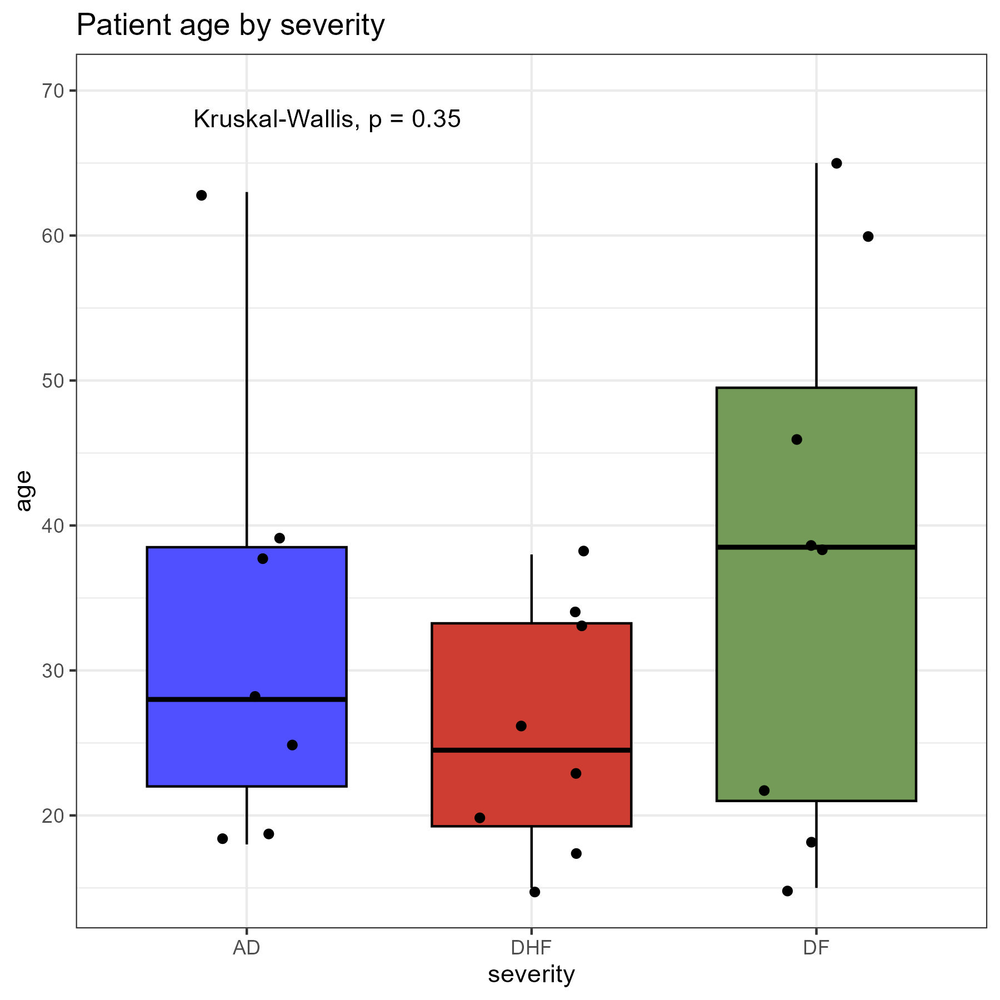
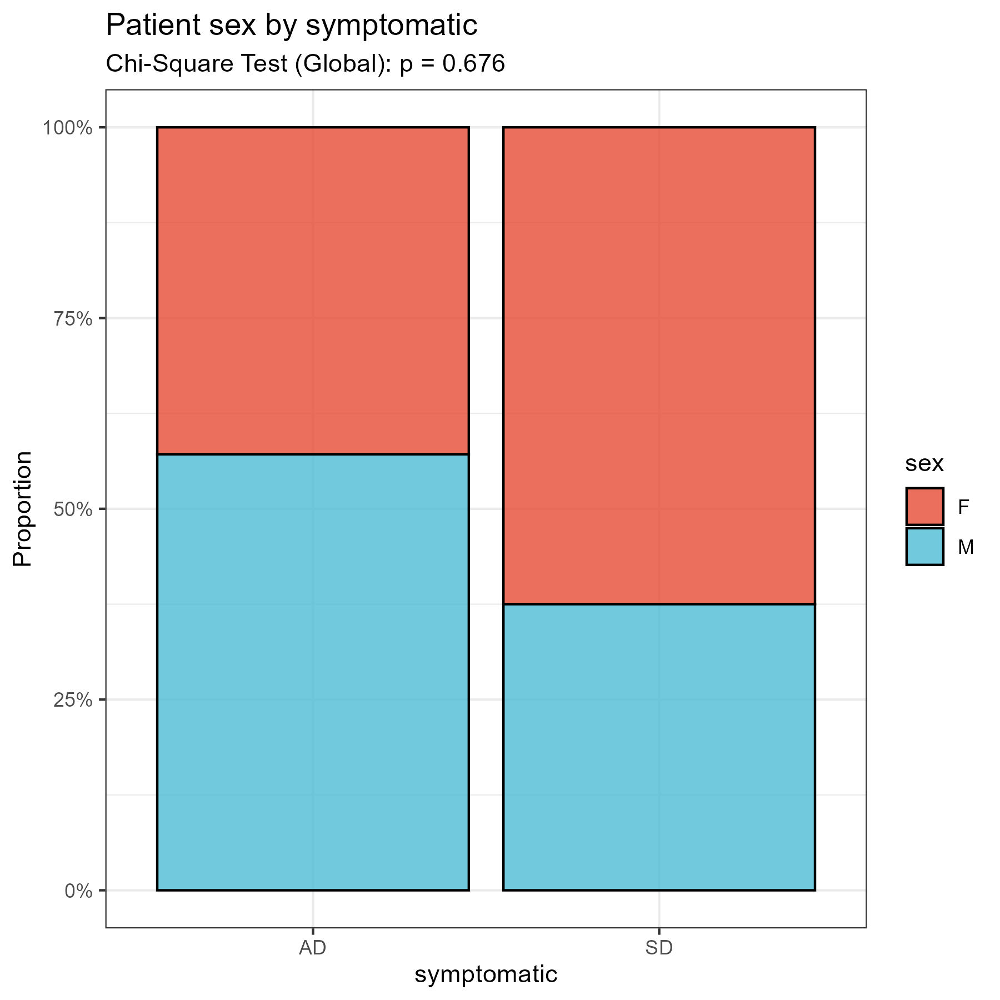
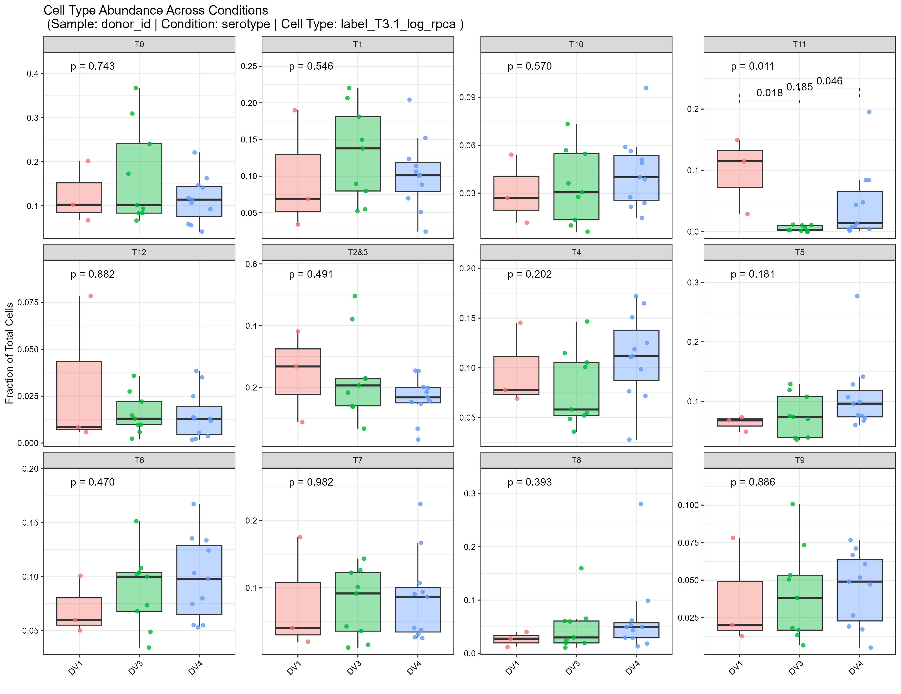
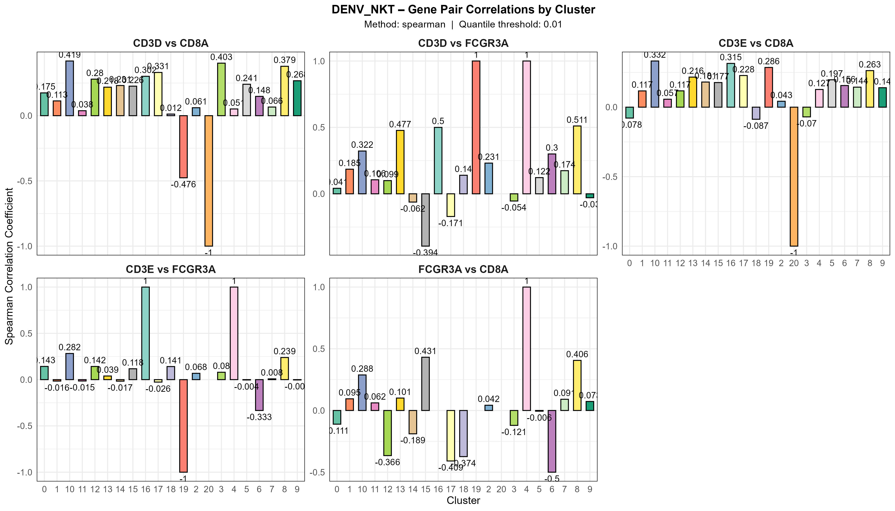

Statistical Analysis: Abundance, Confounders, and Correlations
Chomchon Uansiri
Source:vignettes/OHMmy-statistical-analysis.Rmd
OHMmy-statistical-analysis.RmdIntroduction
Beyond visualizing clusters and marker genes, rigorous single-cell
analysis requires statistical testing. OHMmy provides
built-in tools to assess clinical cohort balance, calculate differential
cell type abundance, and compute statistical correlations between
genes.
Part 1: Confounder Quality Control (Metadata Stats)
Before testing for differences in cell abundance between two conditions (e.g., Healthy vs. Disease), you must ensure your patient cohorts are balanced. If all your diseased patients are significantly older or have different clinical backgrounds than your healthy controls, your results will be confounded.
The plot_metadata_stats() function automatically tests
categorical and continuous clinical variables across your
conditions.
plot_metadata_stats(
seurat_obj = seurat_obj,
sample_col = "donor_id", # The column containing individual patient/mouse IDs
condition_col = "disease_state", # The experimental condition (e.g., Control vs. Infected)
metadata_vars = c("age", "viral_load", "sex", "batch"),
output_dir = paste0(out_dir, "confounder_qc/")
)

Part 2: Cell Type Abundance
To determine if a specific cell population expands or contracts
during an infection or treatment, use
plot_cell_abundance(). This function aggregates cell counts
per patient, calculates normalized proportions, and performs statistical
testing between your conditions.
plot_cell_abundance(
seurat_obj = seurat_obj,
sample_col = "donor_id",
condition_col = "disease_state",
celltype_col = "cell_type_annotation", # The column containing your cluster labels
# Visualization settings
facet_by_cluster = TRUE, # Creates individual plots for each cell type
pairwise_label = "p.adj", # Display adjusted p-values on the plot
base_size = 2.5,
y_expand = 0.35, # Adds headroom for the statistical significance bars
output_dir = paste0(out_dir, "abundance/")
)
Part 3: Statistical Gene-Pair Correlations
While blend plots can visually show co-expression, sometimes you need hard statistical values to prove that two genes are correlated (or anti-correlated) within a specific cell population.
plot_gene_pair_correlations() calculates Pearson or
Spearman correlations for specific gene pairs across all your
clusters.
# Calculate statistical correlations for specific pairs
cor_results <- plot_gene_pair_correlations(
seurat_obj = seurat_obj,
cluster_col = "cell_type_annotation",
# List the exact pairs of genes you want to test
gene_pairs = list(
c("CD3D", "FCGR3A"),
c("CD8A", "FCGR3A")
),
cor_method = "spearman",
sample_name = "Cohort_A",
output_dir = paste0(out_dir, "correlations/")
)
# You can view the raw correlation table output directly in the console
print(cor_results$data)